| Created
08/30/2000. Revised: 1/24/2024
. Copyright © 2000 - 2024 by Victor Manta, Switzerland/USA All rights reserved worldwide. |
|
Change must come through the barel of a gun
Mao ZedongCHINESE TIBET, THE BEGINNING
Tibet, former independent state and provincial-level administrative area of China, in the southwestern part of the country. Tibet is the highest region on earth, having an average elevation of more than 4,875 m (16,000 ft); for this reason it is sometimes called the Roof of the World. It is also one of the world's most isolated regions, surrounded on three sides by vast mountain systems, namely the Himalayas on the south, the Karakorum Range on the west, and the Kunlun Mountains on the north. Tibet has a total area of about 1,200,000 sq km (463,320 sq mi). The capital and largest city of Tibet is Lhasa.
|
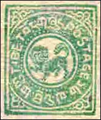 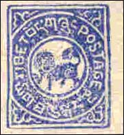 |
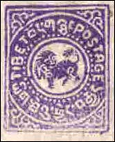 |
In October 1950, little more than a year after the Communists gained full control of mainland China, their troops invaded Tibet. To rally the nation against the advancing invasion force, the regency in November invested the 14th Dalai Lama, although he was only 15 years old at the time, with full authority. Resistance was soon crushed, and Great Britain and India offered no help.
|
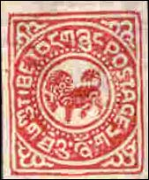 |
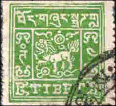 |
The Tibetan government capitulated in May 1951, signing a dictated treaty that provided for the maintenance of the power of the Dalai Lama in domestic affairs, for Chinese control of Tibetan foreign and military affairs, and for the return from China of the Lamaist spiritual leader, the Panchen Lama, reputedly a partisan of the Communist regime. Communist military units reached Lhasa in October.
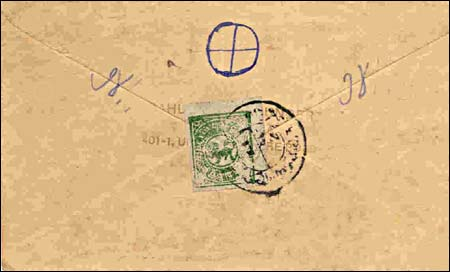
A SMALL PROVINCE OF A BIG COUNTRYIn the latter half of 1958 widespread anti-Communist guerrilla activity was reported in eastern Tibet. It was believed that the rebellion was provoked by attempts to institute people's communes, similar to those established in other parts of China, in which people laboured under quasi-military discipline in order to increase production. Although the Chinese announced that the establishment of the communes in Tibet had been postponed, the rebellion was not contained, and in March 1959 it flared into a full-scale revolt in Lhasa. The Dalai Lama fled to India at the end of the month and subsequently established a community of Tibetans there. The Chinese then crushed the revolt and made the Panchen Lama head of state; an estimated 87,000 Tibetans were killed in the course of the rising (*). On October 21 the United Nations General Assembly approved a resolution deploring the suppression of human rights in Tibet. A similar resolution was also passed on March 9, 1961.The most commonly cited number is 1,200,000 Tibetan deaths at the hands of the Chinese since 1950. This figure appeared in Our Times, in US House legislation.
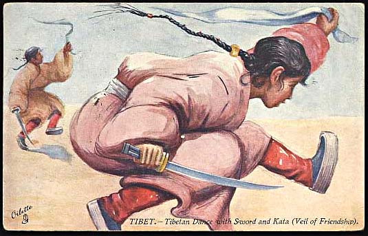
The Chinese admitted in 1980 that Tibet had been misgoverned and announced reforms for the region, allowing religious activity and rebuilding monasteries destroyed by Red Guards, in an effort to improve relations with the Tibetan populace. Violent demonstrations protesting Chinese rule occurred in October 1987 and May 1993; the Chinese authorities responded with a variety of policies including forcible suppression of dissent, unrelenting surveillance, tight supervision of religious activity, and importation of Han Chinese settlers to outnumber the native population. (*) Compare this figure with that of about 3000 people assassinated under the dictatorial, anti-Communist regime in Chile; about 30 time more people died in Tibet in one year than in Chile during decades of dictatorship. Compare than the involvement of the international community when it fights for the trial of General Pinochet for his past crimes with the involvement of the same community in the defense of the presently living and hardly surviving Tibetan people. Source: Microsoft Encarta 1996, World English Edition.
|
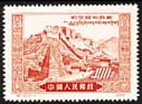 |
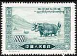 |
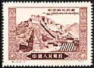 |
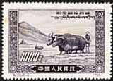 |
We show above some stamps issued by the free Tibet between 1912 - 1950, a cover of the same period of time and a Tibetan postcard of 1910. The set of four stamps shown above was issued by the China PR on March 15, 1952, and is called in Scott "Liberation of Tibet" (i.e. the name that the Chinese PA gave to this set). The good question is of whom was actually Tibet liberated.Tip: move the mouse over the stamps for more information.Exile Tibetan Stamps
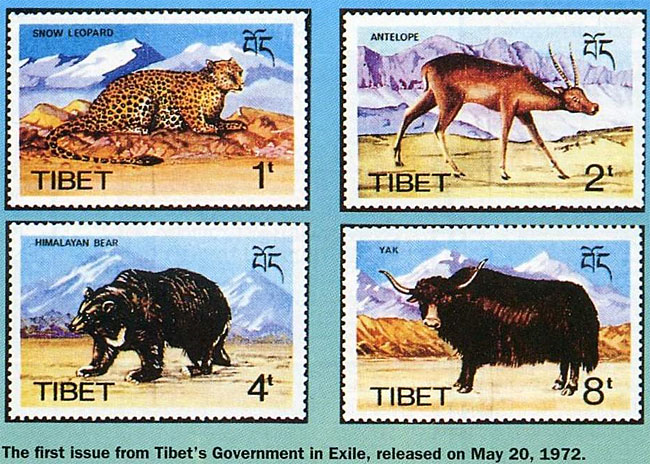
The rights denied to the Tibetans include: 1. Life, liberty and security have been violated. 2. Forced labour has been inflicted on the Tibetans. 3. Torture and cruel and degrading treatment have been inflicted. 4. Rights of home and privacy have been violated. 5. Freedom of movement within a state, and the right to leave and return to Tibet have been denied. 6. Marriages have been forced upon unwilling parties. 7. Property rights have been arbitrarily violated. 8. Freedom of religion and worship have been systematically denied. 9. Freedom of the expression and communication of ideas is totally lacking. 10. Freedom of association is denied. 11. The right to representative government is denied. 12.There is a wanton disregard for the economic rights of man in relation to his country’s resources.
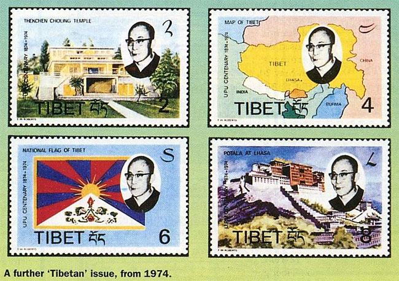
13. The right to a free choice of employment is denied. 14. Conditions of labour do not conform to minimum standards in respect of rest and limitations of hours. 15. The right to an adequate standard of living is denied. 16. The right to a liberal and efficient, nondiscriminatory educational system is denied. 17. The right to participate in the cultural life of the community is denied. 18. The limitations imposed on the rights of the Tibetans far exceed any which are reasonably referable to the requirements of public morality, public order and the welfare of society.
Source: Regina M. Clark, “China’s Unlawful Control over Tibet: The Tibetan People’s Entitlement to Self-Determination,” 12 Ind. Int’l & Comp. L. Rev. 293 (2002).
Note: China PR was never condemned by the United Nations for its human right violations in Tibet. The UN never recognized the rights of Tibetans to self-determination.
A BEAUTIFUL SET OF TIBETAN ART
A set of Tibetan Art was issued on June 7, 1993 by the postal administration of Liechtenstein. The 60 Rp stamps displays details of the Thanka painting "Tale of the Ferryman", the 80 Rp stamp shows a religious dance mask and the Fr 1.00 stamp presents a detail of another Thanka painting, "The Tale of the Fish".
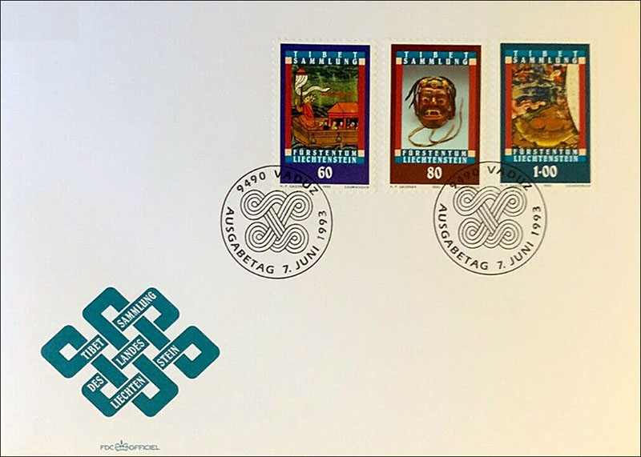
The FDC is labeled: "Tibet Sammlung des Landes Liechtenstein", what means: The Tibet Collection of the Liechtenstein Country. These works of art escaped the destruction perpetrated during the Chinese Cultural Revolution period.
Note: Exile Tibetan stamps thanks to Rodney, RCSD.
P.R. OF CHINA 2014-10 Budhist Deity painting THANGKA. Mini pane sheet.
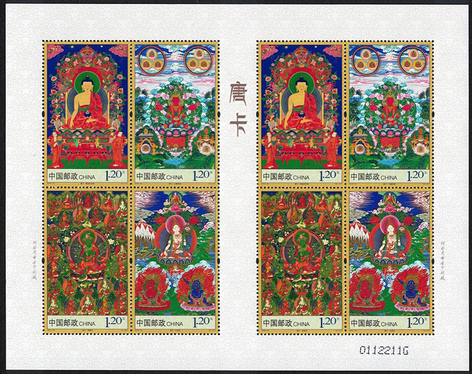
P.R. OF CHINA 2014-10 Budhist Deity painting THANGKA. Souvenir sheet.
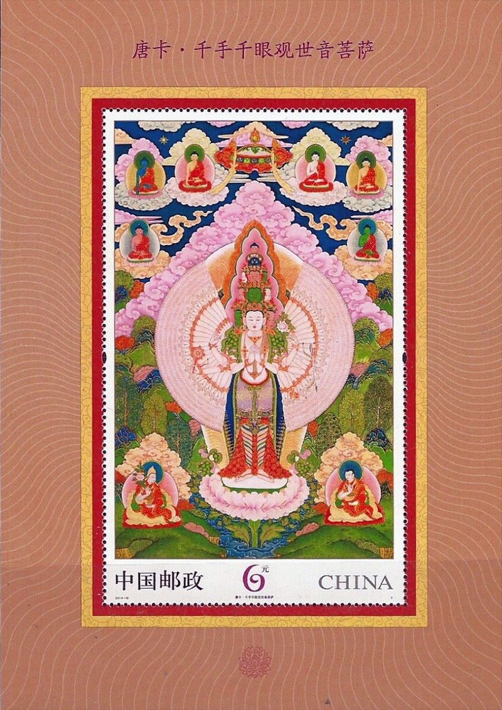
| Created
08/30/2000. Revised: 1/24/2024
. Copyright © 2000 - 2024 by Victor Manta, Switzerland/USA All rights reserved worldwide. |
|